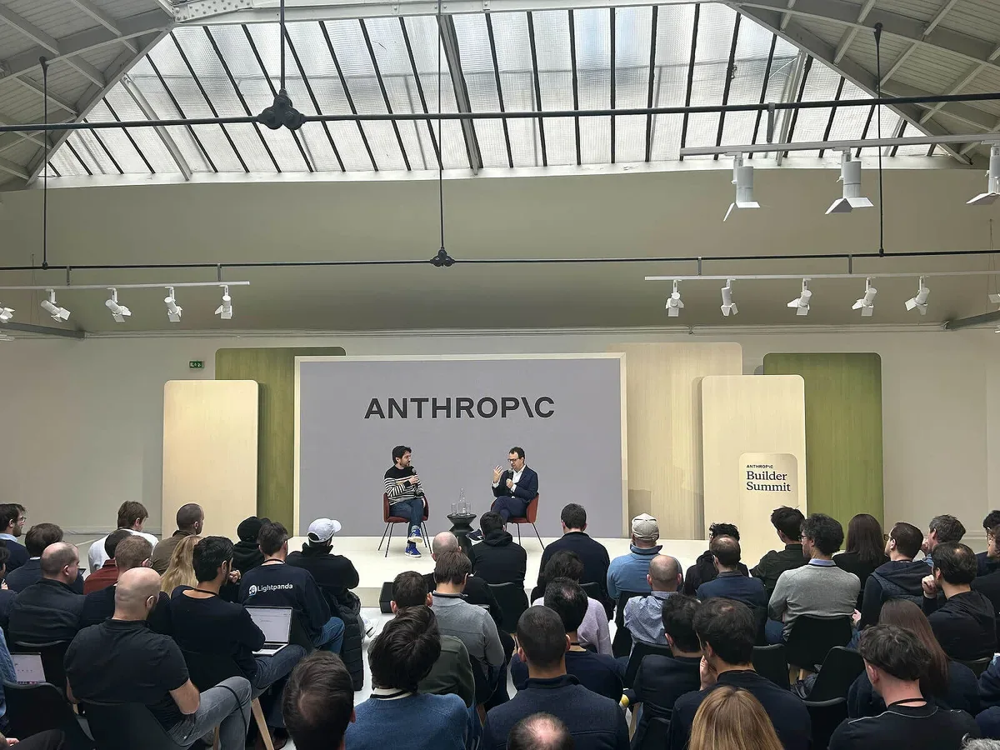

Индустрия
Белый дом обязал Anthropic заблокировать иностранцам доступ к ИИ после взлома систем АНБ
Белый дом приказал Anthropic ограничить доступ к ИИ иностранцам после того, как Mythos 5 якобы взломал системы АНБ за часы
CNews
23 июн. 2026 г.Материалы из источника CNews.
46 материалов
Белый дом приказал Anthropic ограничить доступ к ИИ иностранцам после того, как Mythos 5 якобы взломал системы АНБ за часы

TerraMaster представила 4-дисковый NAS с ИИ-управлением на естественном языке

«М.Видео» вкладывает 9 млрд рублей в ИИ и ИТ — на фоне падения прибыли и роста маркетплейса.

RuClaw от «К2Тех» — платформа для безопасных ИИ-агентов с поддержкой российских LLM и полным аудитом.

Коллективный иск в Калифорнии: операторов АЗС обвинили в сговоре с помощью ИИ от Kalibrate.

ИИ-супервайзер Fedot.ai от «Цифровой логистики» взял на себя контроль качества в контакт-центре «СберМобайла».

Власти смягчили регулирование ИИ: убрали запрет на зарубежные нейросети и установили переходный период до 2032 года.

80% компаний используют генеративный ИИ в разработке, но 40% считают риски критичными — исследование «Солар» и УЦСБ.

Исследование Sitronics Group: половина сотрудников готова доверить секреты ИИ-ботам, а ущерб от киберпреступлений превысил 200 млрд руб.

Генеративный ИИ в «Росгосстрахе»: анализ 100% звонков и сокращение времени диалога на 7%

Опрос Weeek: 69% россиян применяют ИИ на работе ежедневно

Каждый третий работник в России уже использует ИИ — но работодатели этого официально не требуют

Anthropic лишилась двух топовых моделей по требованию властей США и теперь договаривается с Белым домом

VK Cloud запустил Managed Kubernetes на Bare Metal: ИИ-нагрузки ускорились на 15%

Российский разработчик ИИ-агентов «Делов» выбрал платформу «Сфера» для контроля разработки и безопасности.

Девелоперам предложили готовый маршрут внедрения ИИ — от аудита до пилота за год

175 школьников сдали норматив по ИИ — 124 получили золотые значки с бонусом к ЕГЭ

Треть россиян за ИИ-блогеров, треть против — и только 28% уверены, что отличат их от людей

PT Naira берёт на себя рутину SOC-аналитика — расследования быстрее на 60%, порог входа ниже на 90%

«Первый Бит» запустил ИИ-платформу с готовыми агентами и конструктором для бизнеса

СУБД Platform V Pangolin DB от «СберТеха» получила поддержку векторного поиска для ИИ-задач.

ИИ-агент в «Яндекс Командировках» сам бронирует билеты и отели по одному текстовому запросу

Рекорд потерь и рекорд находок: что изменилось в поиске питомцев в России за год
Франция выдворяет Palantir из спецслужб и ставит на собственный ИИ за 655 млн евро

Каждый второй абзац заключения в дипломе 2025 года выглядит как машинный текст — данные ReText.AI

Европейский ИИ провалил тест на дезинформацию: Mistral — 47-е место из 60

ИТМО и MWS ИИ хотят ускорить нейросети в 4 раза и научить ИИ понимать арабский и казахский

ИИ следит за походкой коров: система из Тимирязевки отслеживает 45 точек тела с точностью 97%

Томск — ИИ-столица России: почему не Москва и кто теснит ChatGPT

ВТБ объяснит инвестору каждую сделку ИИ: прогноз доходности и аналитика портфеля в одном приложении